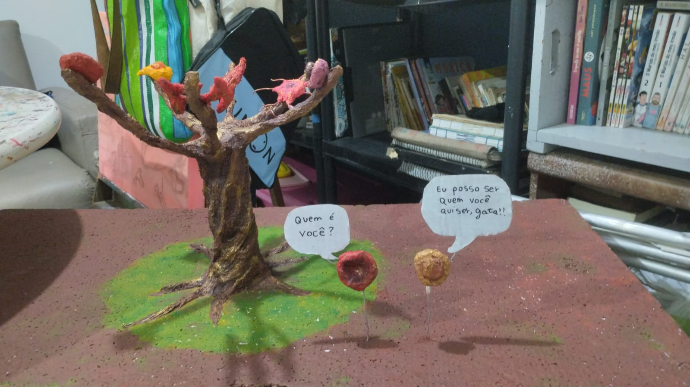

Projeto Integrador: Células Tronco
Esta é a nossa página web para o projeto integrador, juntando os conhecimentos desenvolvidos nas matérias de Autoria Web, ministrada pelo professor Jõao Maria e Biologia, ministrada pela professora Andrea Pereira. A disciplina "Projeto integrador", é ministrada por Álvaro Hermano e tem como objetivo, utilizar do mesmo assunto estudado na biomaket para construir um site explicativo.

Alunos e Orientadores:

Michael Ryan
INFO 3 M

Miguel Fujiwara
INFO 3 M

Matheus Ribeiro
INFO 3 M

Jeyvidison Felipe
INFO 3 M

Leonardo David
INFO 3 M

Andrea Pereira
Orientadora

Álvaro Hermano
Orientador